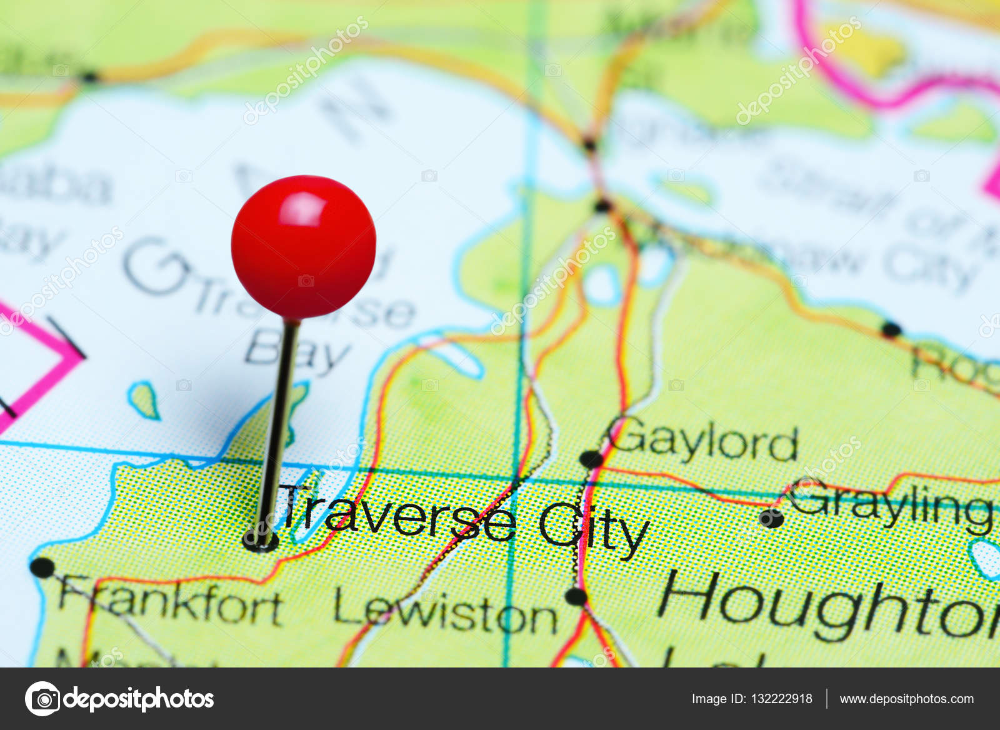
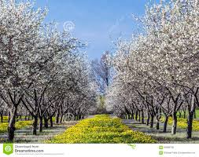
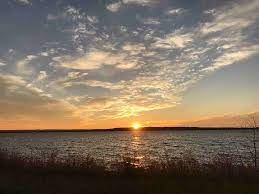

Geography
Traverse City is a part of the greater Northern Michigan region. The city is the main inland port of the Grand Traverse Bay—a long, natural harbor separated from the waters of Lake Michigan by the Leelanau Peninsula, and divided longitudinally almost evenly by a narrow peninsula of tiered hillsides and farmland called Old Mission Peninsula.
The most prominent of the city's waterways is the Boardman River. Along with Boardman Lake, the river is part of the Boardman River Watershed. The Boardman's 287-square-mile (740 km2) watershed contributes one-third of the water volume to the bay and is one of Michigan's top-ten fisheries, with more than 36 miles (58 km) of its 179 miles (288 km) designated as a Blue Ribbon trout fishery.[37] It is also a state-designated "Natural River".[38] Recently, a large project was finished on the Boardman, removing multiple dams from the course of the river.
According to the United States Census Bureau, the city has a total area of 8.66 square miles (22.43 km2), of which, 8.33 square miles (21.57 km2) of it is land and 0.33 square miles (0.85 km2) is water.



Education
The public school district serving Traverse City is Traverse City Area Public Schools. This district includes 10 elementary schools serving grades Pre-K through 5, two middle schools serving grades 6 through 8, and two high schools serving grades 9 through 12: Traverse City Central and Traverse City West.[55] In addition, the district includes an alternative high school (Traverse City High School) and a montessori elementary school.
Traverse City offers a handful of charter schools, including the Woodland School,[56] the Old Mission Peninsula School,[57] and Grand Traverse Academy.[58]
Vocational career training is offered to high school students within the Traverse Bay Area Intermediate School District at the TBAISD Career Tech Center (CTC), located within just outside Traverse City. Students are bussed to and from their respective high schools to the Career Tech Center daily, and are eligible to receive credit for each. Courses include:[59]
Agriscience
Arts & Communication
Business Management, Marketing & Technology
Engineering/Manufacturing & Industrial Technology
Health Services
Human Services
Culture
Most of Traverse City's economy is based on tourism.[73] As part of the 2011 tourism advertising campaign the Traverse City Visitors Bureau, Traverse City Cherry Capital Airport and local businesses sponsored a video to be played on all Delta flights to and from Cherry Capital Airport in the month of June 2011.[74] The National Cherry Festival, usually in the first week of July, tends to host hundreds of thousands of tourists and locals to the area, as does the Traverse City Film Festival (established in 2005) at the end of July. It has become a focal point within the craft brewing trend. In November Beer Week is celebrated, with tours of breweries including samplings of craft brews, dinners and workshops.[75]
The National Cherry Festival, held during the first full week of July every year, is a draw for tourists to Traverse City. The festival features parades, fireworks, an air show, election of festival royalty, live music, a pie-eating contest and cherries. It is estimated that the Grand Traverse region produces up to 360,000,000 pounds (163,000,000 kg) of cherries annually. The largest variety of cherry produced locally is the Montmorency cherry, or the "pie cherry". Other cherries grown in the region include the Ulster, or sweet cherry, and the Balaton (from Lake Balaton in Hungary), a cherry situated between the Montmorency and Ulster in terms of color and taste.
The Traverse City Film Festival, held at the end of July and beginning of August every year since 2005, is another draw for tourists and film buffs to Traverse City. The festival was started by Michael Moore, Doug Stanton and John Robert Williams as a way to bring more culture into the area via cinema.
The locale and topography is conducive for road bicycling, aided by the TART trail system.[76] A map with routes, different trips, advice and local knowledge is available.[77] Lake Michigan presents a location for sailing, fishing, and kayaking.[78]
The Traverse City State Park, with about 250 campsites, is located three miles (4.8 km) east of downtown on 47 acres (19 ha) including a quarter mile beach on the East Bay arm of Grand Traverse Bay.
The Boardman River Nature Center is the interpretive center and management headquarters for the Grand Traverse Natural Education Reserve, a 505-acre local park and natural area.
The sandy soil is conducive to viticulture, and there are over 50 wineries in the Traverse City area.[79] Most offer free wine tasting. Traverse city is located at the base of the Old Mission Peninsula wine region.
This page is still under development..